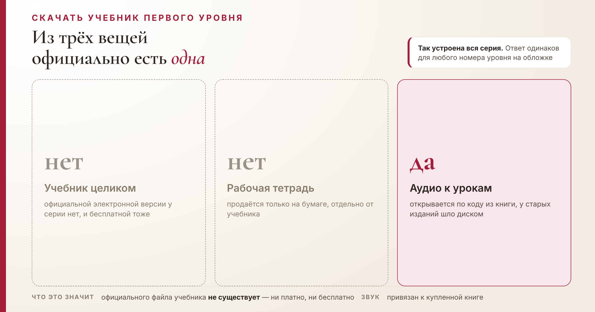
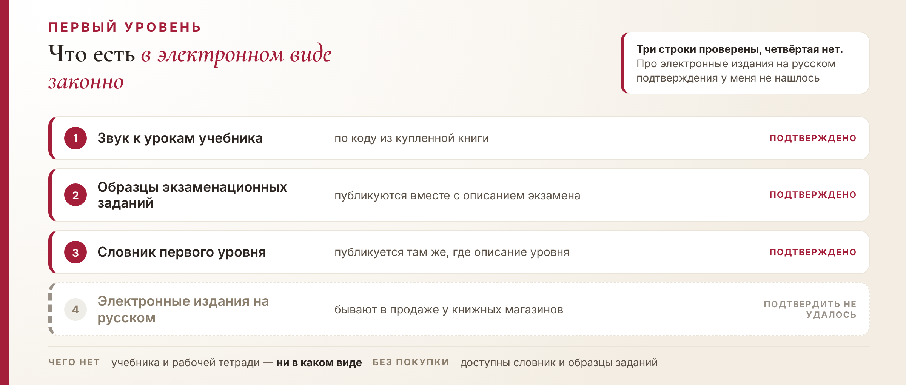

Экзамен
Скачать учебник HSK 1: что из материалов первого уровня есть в электронном виде


Запрос «скачать учебник HSK 1» ведёт к трём разным вещам, и официально существует только одна из них — звук к урокам. Учебника и рабочей тетради в электронном виде нет ни бесплатно, ни за деньги.
Зато открыто лежит другое, и этого хватает, чтобы начать заниматься в тот же день. Разберём, что именно и где это искать.
Короткий ответ: что можно получить в электронном виде
Коротко: звук — да, книги — нет, а кроме них есть ещё два материала, которые публикуют открыто.
Почему книг нет в электронном виде, разобрано у нас в отдельной статье про материалы в цифре — повторять не буду. Здесь важно следствие: искать официальный файл учебника бесполезно, его не существует.
Сразу скажу, почему я не ограничиваюсь ответом «нельзя». Человек, который ищет файл, обычно хочет не пиратства, а простого: начать сегодня, а не через три недели, пока идёт посылка. Эту задачу решить можно, и законно.
А вот набор для начала занятий собрать можно, и он не пустой. Ниже я разложу его по строкам с источниками, чтобы было видно, что подтверждено, а что нет.
Чего ищут и чего не существует
Прежде чем отвечать, стоит разделить запрос на части: под «скачать учебник» люди имеют в виду разные вещи, и ответ у каждой свой.
Три вещи, которые имеют в виду под словом «скачать».
| Что ищут | Есть официально | Почему |
|---|---|---|
| Учебник целиком | нет | официальной электронной версии у серии нет, и бесплатной тоже |
| Рабочая тетрадь | нет | продаётся только на бумаге, отдельно от учебника |
| Аудио к урокам | да | открывается по коду из книги, у старых изданий шло диском |
Обратите внимание на третью строку: она не «да, бери», а «да, по коду из книги». Это важное уточнение, из-за которого звук нельзя считать заменой покупке.
Две строки из трёх — «нет». Это не особенность первого уровня: так устроена вся серия, и ответ одинаков для любого номера на обложке.
То, что встречается в сети под видом учебника, — неофициальные копии. Ссылок на них блог не ставит и площадок не называет; в копиях чаще всего нет звука, а задания тетради идут без ключей, и на занятии это вылезает в первый же трудный момент.
Проверять эти строки стоит самому: описания в магазинах иногда обещают «электронное приложение», и под ним имеется в виду как раз звук, а не книга.
Звук: единственное, что выдают официально
Это и есть ответ на половину запросов про скачивание.
Логика издателя тут понятная: книга продаётся на бумаге, а звук без книги бесполезен — по нему не позанимаешься, если нет текстов уроков. Поэтому его и отдают свободно, но тем, у кого книга уже есть.
Звук к урокам открывают по коду, напечатанному в книге. В более ранних тиражах вместо кода шёл диск. Ни то ни другое не продаётся отдельно: доступ привязан к экземпляру книги.
Инструкцию, как именно это делается, я здесь не переписываю — она в нашей статье про электронные материалы, вместе с тем, что делать, если код не сработал.
И маленькая деталь, из-за которой теряют деньги. У подержанной книги код часто уже использован. Если звук вам нужен, а книга с рук, спрашивайте про код до покупки, а не после.
Образцы заданий и словник уровня
Теперь к тому, ради чего эта статья и написана: что по первому уровню лежит открыто и берётся без всяких условий.
Два материала, которые публикуют открыто и которые закрывают первые недели занятий.

| Что | Где это лежит | Статус |
|---|---|---|
| Звук к урокам учебника | по коду из купленной книги | подтверждено |
| Образцы экзаменационных заданий | публикуются вместе с описанием экзамена | подтверждено |
| Словник первого уровня | публикуется там же, где описание уровня | подтверждено |
| Электронные издания на русском | бывают в продаже у книжных магазинов | подтвердить не удалось |
Словник — самое полезное из этого списка. Он даёт то, ради чего обычно и ищут учебник: список слов уровня. Учебник раскладывает их по урокам и даёт тексты, но сами слова можно начинать учить сразу.
Третья строка таблицы требует пояснения. Словник публикуется как часть описания уровня, то есть лежит там же, где и требования, — и это единственный официальный список, по которому стоит проверять свой.
Образцы заданий публикуют вместе с описанием экзамена. Их немного, и подготовкой они не являются — зато показывают формат вопроса, и одного взгляда хватает, чтобы перестать его бояться.
Первые слова с произношением у нас собраны отдельно: китайские слова для начинающих. Как запоминать знаки — здесь: как запоминать иероглифы.
Как я собираю электронный набор первого уровня
Ученица написала перед первым занятием: «Книгу заказала, идёт три недели. Пришлите, пожалуйста, пдф, чтобы не терять время». Просьба понятная, и отвечаю я на неё всегда одинаково.
Файл я не присылаю — ни своего, ни найденного. Но три недели действительно терять незачем, и мы их не теряем: набор на это время собирается из того, что лежит открыто.
Берём словник первого уровня и начинаем с первых тридцати слов. Берём образцы заданий и смотрим, как выглядит вопрос — не чтобы решать, а чтобы знать, чего ждать. Ставим произношение, для которого книга вообще не нужна.
К приходу книги у неё было выучено около полусотни слов и поставлены три звука, с которыми у носителей русского обычно сложности. Первый урок мы прошли за половину обычного времени, потому что слова из него уже были знакомы.
И отдельно про копию, которую она всё-таки нашла и прислала мне сама — «посмотрите, годится?». Я посмотрела: это были сканы без звука, а на страницах с заданиями не хватало половины разворотов.
Мы это обсудили спокойно. Беда таких копий не в законе даже, а в том, что они неполные, и обнаруживается это в самый неподходящий момент — когда задание нужно сделать, а страницы нет.
Вывод, который я делаю: ожидание книги — не простой, если знать, что открыто лежит. А копия экономит деньги и тратит время, и этот обмен почти всегда невыгодный.
Учебники на русском: что бывает в цифре
Этот вопрос приходит от тех, кому тяжело даются пояснения на китайском и английском, — и он законный.
Такие книги выпускают: под первый уровень есть, например, базовый курс «Новая эра» в соавторстве Мин Гун и Юлия Селиверстова — издание я нашла в продаже и в этом уверена. Про электронную версию сказать того же не могу: ни подтвердить, ни опровергнуть её существование по открытым данным не вышло, и смотреть это нужно в карточке самого издания.
Почему это вообще важно для первого уровня: именно на нём чаще всего занимаются сами, без преподавателя, и пояснения на незнакомом языке превращаются в отдельное препятствие.
Общее правило тут простое. У российских издателей электронные версии встречаются чаще, чем у китайских: часть книг продаётся в цифре легально. Но проверять нужно каждое издание отдельно, а не рассчитывать на правило.
Чем русскоязычный учебник отличается от китайского по содержанию, разобрано у нас в статье про учебник первого уровня.
И ещё одно, что касается любых русскоязычных пособий: они готовят к тому же экзамену, но порядок тем в них свой. Если вы занимаетесь по китайской серии, параллельно брать второй учебник не стоит — проще добрать объяснения, чем вести два курса сразу.
Про «3.0» и «новую версию»
Короткий ответ: серии учебников с названием «3.0» не существует. Цифра относится к стандарту экзамена, а не к названию книг, поэтому запрос «скачать учебник 3.0» не ведёт ни к чему — ни к файлу, ни к бумажной книге.
Путаница живучая, потому что оба числа стоят рядом в объявлениях: «учебник для HSK 3.0» звучит как название книги, хотя это описание экзамена, к которому книга готовит.
Какая серия считается официальной и что менялось в изданиях, разобрано в отдельной статье блога про серии учебников.
Что делать, пока книга едет
Три недели ожидания — обычный срок, и это не простой.
- Начните со слов. Возьмите словник уровня и учите по десятку слов в день: к приходу книги будет выучена пятая часть уровня.
- Поставьте произношение. Для этого учебник не нужен вовсе, а переучивать потом дороже, чем ставить сразу.
- Посмотрите образцы заданий. Не решать, а понять, как выглядит вопрос и сколько в нём вариантов ответа.
Эти три пункта закрывают примерно половину того, что даёт первый урок книги, и ни один из них не требует ничего, кроме списка слов и записи голоса. Когда книга придёт, первый урок пройдётся заметно быстрее.
Порядок черт, с которого начинают письмо, разобран отдельно: порядок черт. Как устроен пробный тест первого уровня — здесь: пробный тест HSK 1.
Отдельно про звук в это время. Пока книги нет, слушать можно что угодно по уровню — но разбирать записи к урокам всё равно придётся после покупки: они привязаны к текстам, которых у вас пока нет.
Чего делать не стоит — учить по случайной копии из сети. Не из-за правил, а из-за содержания: в копиях теряются страницы и почти всегда нет звука, а звук на первом уровне — половина экзамена.
И последнее про ожидание. Если книга едет из-за границы, заложите не три недели, а месяц: сроки доставки плавают, а план занятий, построенный на точной дате прихода, срывается чаще, чем выполняется.
Частые ошибки
- Искать официальный файл учебника. Его не существует ни платно, ни бесплатно.
- Покупать книгу с рук, не спросив про код. Звук может быть уже открыт прежним владельцем.
- Ждать книгу, ничего не делая. Словник и произношение доступны сразу.
- Искать «учебник 3.0». Серии с таким названием нет.
- Считать копию равноценной книге. В ней не хватает страниц и звука.
Не хотите ждать книгу три недели? На пробном занятии мы начинаем с того, что доступно сразу: первые слова уровня, произношение и план на время ожидания.
Приходите на пробное занятие, форматы и программа — здесь: онлайн-курсы китайского.
И про деньги, раз уж вопрос обычно упирается в них. Комплект первого уровня — две книги, учебник и тетрадь. Это разовая трата на несколько месяцев занятий, и она окупается хотя бы тем, что к ней прилагается звук, которого в копиях нет.
Чего в статье нет намеренно
- Ссылок на файлы и названий площадок. Блог их не публикует.
- Инструкции, как открыть звук по коду. Она в отдельной статье про электронные материалы.
- Разбора, почему книг нет в легальном доступе. Там же.
- Перепечатанного словника. Блог не перепечатывает списки слов.
- Утверждения, что у русскоязычного учебника есть электронная версия. Подтвердить не удалось.
Если из всей статьи оставить одно: официально в электронном виде по первому уровню выдают только звук, а всё остальное, что вам нужно для старта, лежит открыто и не требует ни кода, ни покупки. Это словник, образцы заданий и ваше собственное произношение.
Частые вопросы (FAQ)
Можно ли скачать учебник HSK 1 бесплатно и законно?
Нет. У официальной серии нет электронной версии ни платной, ни бесплатной: книги издаются и продаются только на бумаге. Всё, что встречается в сети под видом учебника, — неофициальные копии, и блог на них не ссылается.
Что из материалов первого уровня есть в электронном виде?
Четыре вещи. Звук к урокам учебника — по коду из купленной книги. Образцы экзаменационных заданий и словник уровня — они публикуются открыто вместе с описанием экзамена. И электронные издания на русском, но тут я не смогла подтвердить, что они бывают именно у учебников под уровни.
Как получить аудио к учебнику?
В изданиях последних лет в книге напечатан код, по нему звук и открывают. В более ранних тиражах вместо кода шёл диск. Разбор этого у нас есть в отдельной статье про электронные материалы; главное — код привязан к книге, и без покупки его не получить.
Есть ли электронный учебник HSK 1 на русском?
Пособия на русском под ступени экзамена выпускают: скажем, «Китайский язык. Новая эра» — базовый курс под первый уровень, написанный Мин Гуном и Юлией Селиверстовой. Что книга выпущена и продаётся, я видела своими глазами; про её электронную версию у меня данных нет, и проверять это нужно в карточке конкретного издания.
Существует ли учебник «версии 3.0»?
Серии учебников с таким названием нет. «3.0» — это про стандарт экзамена, а не про название книг, поэтому запрос «скачать учебник 3.0» ведёт в никуда. Какая серия считается официальной, разобрано у нас отдельно.
Чем заниматься, пока книга не пришла?
Первыми словами уровня по словнику, произношением и порядком черт — для этого книга не нужна вовсе. За две-три недели ожидания спокойно набирается полсотни слов, и первый урок потом проходится вдвое быстрее.
И последнее, что стоит держать в голове при поиске. Любая страница, обещающая официальный файл учебника бесплатно, обещает то, чего не существует, — и это хороший признак, чтобы закрыть её сразу, не разбираясь в подробностях.
Источники
- Отсутствие официальной электронной версии учебника и рабочей тетради приведено по нашей же статье про материалы в цифре.
- Доступ к звуку по коду из книги и диски в ранних тиражах — оттуда же.
- Публикация образцов заданий и словника вместе с описанием экзамена подтверждена нашими проверками по первому уровню.
- Про электронные издания на русском: подтвердить не удалось, что они бывают у учебников под уровни экзамена. Это помечено в таблице.
- Выпуск базового курса «Новая эра» под первый уровень подтверждён карточкой книжного магазина; данных о его электронной версии у меня нет.
- Отсутствие серии с названием «3.0» приведено по нашей статье про серии учебников.
- Ссылок на файлы, названий площадок и магазинов не привожу.
- Случай с ученицей, ждавшей книгу три недели, взят из занятий Kitai School; имя не привожу.